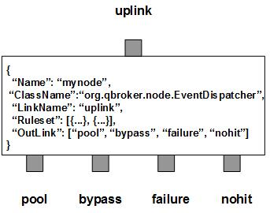

EventDispatcher is a message node that supports Pub/Sub of JMSEvents. EventDispatcher dispatches the incoming events to multiple destinations according to their content and the registered subscriptions. It also supports generic JMS messages.
EventDispatcher contains a number of subscriptions which define a filter and a set of actions. Internally, EventDispatcher also creates a topic pattern based on the filter for each subscription. The topic pattern will be used as a pre-filter on the topic of incoming events. For each incoming event, EventDispatcher extracts the topic first. Then it looks up the topic cache for a list of candidate subscriptions on the topic. If the list is empty, there is no subscibers for the event. The incoming event will be routed to the outlink of nohit. Otherwise, EventDispatcher just loops through the list and applies the filter of each candidates on the event. If it is a match and the subscription is active, EventDispatcher will create an ObjectEvent with the event and actions attached. The new message will be sent to the outlink of pool as a request to invoke all the actions of the subscription on the incoming event. At least one instance of EventPersister is supposed to be linked to the outlink of pool. This operation continues until all candidates in the list are checked. If there is no request event generated, the original incoming event will be routed to the outlink of nohit. Otherwise, it will be routed to the outlink of bypass. Due to the MT-Safty, any messages routed to the outlink of bypass should not be modified downstream. Otherwise, EventPersister may throw exceptions in delivery process. If those messages need to be modified, please work on their copy via DuplicateNode and leave the original messages alone. In case of any failure, the original incoming event will be sent to the outlink of failure.
A subscription is defined in terms of a ruleset. Each ruleset has a unique name of the subscription, an EventSelector to match events, a time window to define the active time of the subscription and a group of EventActions as the reactions on the subscribed events.
EventDispatcher always creates two extra rulesets. The first is the nohit ruleset for those events not hitting any subscriptions. The second is the candidate ruleset for all events hitting to at least one of subscriptions. Since a candidate event may hit number of subscriptions and generates a request event for every hit subscriptions, the stats count for the candidate ruleset will be the number of the incoming events rather than the number of the request events. The number of request events will be counted by their own rulesets. The DisplayMask and StringProperty of the ruleset are used to display the details of dispatched event for the ruleset. The stats of the rules are stored in the fields of RULE_SIZE, RULE_COUNT and RULE_PEND. RULE_PEND is for number of cached topics, RULE_SIZE for number of preliminary hits, whereas RULE_COUNT is for number of real hits.
You are free to choose any names for the four fixed outlinks. But EventDispatcher always assumes the first outlink for pool, the second for bypass, the third for failure and the last for nohit. Any two or more outlinks can share the same outlink name. It means these outlinks are sharing the same output channel.
Apart from the common properties, there is only one implementation specific properties for EventDispatcher.
| Property Name | Data Type | Requirement | Description | Examples |
|---|---|---|---|---|
| SessionTimeout | integer | optional | timeout in second for a session | 7200 (default: 86400) |
The dispatch operation is executed via the pre-defined rulesets. Therefore, the configuration of the rulesets is critical to the operations of EventDispatcher. Here are complete properties of rulesets for the node of EventDispatcher.
| Property Name | Data Type | Requirement | Description | Examples |
|---|---|---|---|---|
| Name | alphanumeric with no spaces | mandatory | name of the ruleset | event |
| ClassName | string | mandatory | class name for the actions | org.qbroker.node.EventActionGroup |
| ActionGroup | list | mandatory | list of actions to invoke on subscribed events | see example |
| ActiveTime | map | mandatory | active time windows of the subscription | see example |
| EventPattern | list | optional | list of patterns to select events | see example |
| XEventPattern | list | optional | list of patterns to exclude events | see example |
| StringProperty | map | optional | for logging properties on the dispatched events | see example |
| DisplayMask | integer | optional | mask for loggings | 64 (default: 0) |
Here is an example of a ruleset or a subscription:
{
"Name": "page_mis_mq",
"ClassName": "org.qbroker.event.EventActionGroup",
"Type": "EventActionGroup",
"Site": "CNN",
"Category": "MAIL",
"Description": "page alert of MQ to MIS Group",
"EventPattern": [{
"priority": "^(ERR|CRIT)$",
"category": "^(MQ|MQSI)$",
"hostname": "^(ipe|mps)"
}],
"XEventPattern": [{
"hostname": "(dev|ref|qa)"
}],
"ActionGroup": [{
"URI": "smtp://web.turner.com/",
"Priority": "^ERR$",
"Email": ["misapp-warn@bestevent.turner.com"],
"ProcessMonitor": {
"Subject": "##priority##: MQ process ##name## died on ##hostname##",
"TemplateFile": "/opt/qbroker/templates/mail_proc.txt"
},
"JMSMonitor": {
"Subject": "##priority##: problems with ##name## on ##hostname##",
"TemplateFile": "/opt/qbroker/templates/mail_jms.txt"
},
"QueueMonitor": {
"Subject": "##priority##: Queue problem with ##name## on ##hostname##",
"TemplateFile": "/opt/qbroker/templates/mail_queue.txt"
},
"ChannelMonitor": {
"Subject": "##priority##: Channel problem with ##name## on ##hostname##",
"TemplateFile": "/opt/qbroker/templates/mail_channel.txt"
},
"UnixlogMonitor": {
"Subject": "##priority##: found errors in ##name## on ##hostname##",
"TemplateFile": "/opt/qbroker/templates/mail_log.txt"
},
"FileMonitor": {
"Subject": "##priority##: ##name## seems late",
"TemplateFile": "/opt/qbroker/templates/mail_file.txt"
},
"MultiFileMonitor": {
"Subject": "##priority##: ##name## seems late",
"TemplateFile": "/opt/qbroker/templates/mail_file.txt"
},
"EventSummay": {
"Subject": " ##eventCount## ##priority## alerts with ##name##",
"TemplateFile": "/opt/qbroker/templates/mail.txt"
},
"Default": {
"Subject": "##hostname##: ##priority## problem with ##name##",
"TemplateFile": "/opt/qbroker/templates/mail.txt"
}
},{
"URI": "smtp://web.turner.com/",
"Priority": "^CRIT$",
"Email": ["misapp-oncall@bestevent.turner.com", "misapp-warn@bestevent.turner.com"],
"ProcessMonitor": {
"Subject": "##priority##: MQ process ##name## died on ##hostname##",
"TemplateFile": "/opt/qbroker/templates/mail_proc.txt"
},
"JMSMonitor": {
"Subject": "##priority##: problems with ##name## on ##hostname##",
"TemplateFile": "/opt/qbroker/templates/mail_jms.txt"
},
"QueueMonitor": {
"Subject": "##priority##: Queue problem with ##name## on ##hostname##",
"TemplateFile": "/opt/qbroker/templates/mail_queue.txt"
},
"ChannelMonitor": {
"Subject": "##priority##: Channel problem with ##name## on ##hostname##",
"TemplateFile": "/opt/qbroker/templates/mail_channel.txt"
},
"UnixlogMonitor": {
"Subject": "##priority##: found errors in ##name## on ##hostname##",
"TemplateFile": "/opt/qbroker/templates/mail_log.txt"
},
"FileMonitor": {
"Subject": "##priority##: ##name## seems late",
"TemplateFile": "/opt/qbroker/templates/mail_file.txt"
},
"MultiFileMonitor": {
"Subject": "##priority##: ##name## seems late",
"TemplateFile": "/opt/qbroker/templates/mail_file.txt"
},
"EventSummay": {
"Subject": " ##eventCount## ##priority## alerts with ##name##",
"TemplateFile": "/opt/qbroker/templates/mail.txt"
},
"Default": {
"Subject": "##hostname##: ##priority## problem with ##name##",
"TemplateFile": "/opt/qbroker/templates/mail.txt"
}
},{
"URI": "log:///var/log/qbroker/stats/page_mis_mq.log",
"Summary": "##date## ##priority## ##name## ##hostname## ##text##",
"TemplateFile": "/opt/qbroker/templates/append.txt"
}],
"ActiveTime": {
"TimeWindow": [{
"Interval": "00:00:00-24:00:00"
}]
}
}
where ActionGroup lists two actions on the subscribed events which have their
own filter on the priorities of the events. For details about ActionGroup,
please check the docs on the applicaiton of EventDispatcher.
Here is an example of the node of EventDispatcher:
{
"Name": "node_dispatcher",
"ClassName": "org.qbroker.node.EventDispatcher",
"Operation": "dispatch",
"Capacity": "1024",
"LinkName": "pub",
"XAMode": "1",
"MaxNumberRule": "4096",
"SessionTimeout": "86400",
"DisplayMask": "7",
"Debug": "1",
"StringProperty": {
"uri": "",
"status": ""
},
"Ruleset": [
"page_mis_om",
"page_mis_mq",
"page_mis_mps",
"page_mis_ipe",
"page_mis_mam",
"page_mis_dam",
"page_mis_dam_syslog",
"page_mis_mds",
"mail_ardendo",
"mail_ctreng",
"mail_lep",
"mail_dam",
"page_lep",
"mail_mps",
"mail_mps_rexport_rcu",
"mail_mps_nick",
"mail_ipe_mark",
"mail_ipe_leshelle",
"mail_ipe_api",
"mail_ipe_archive",
"mail_diff",
"mail_trans",
"snmp_traps",
"mail_mps_dba",
"mail_bmam",
"mail_dng",
"mail_omneon",
"mail_ms2",
"mail_mds",
"mail_ylu"
]
"OutLink": [
"sidev",
"pool",
"post",
{
"Name": "failure",
"Capacity": "384",
"Partition": "256,64"
}
"post"
]
}
where Ruleset lists all the subscriptions by their names. They are defined
externally. Once it is instanciated, the container will load them one by one.
EventDispatcher also supports a group of rulesets or subscriptions based on ConfigList or ConfigTemplate. ConfigList manages a list of configurations stored in a separate repository. ConfigTemplate manages a list of configurations sharing a same property template. Please check PublishNode for the details about ConfigTemplate. Here we just focus on ConfigList.
A ConfigList is an object referencing a list of external rulesets. It is designed for the separation between the workflow admins and the end users. EventDispatcher is a highly configurable workflow engine for event pub/sub services. The subscriptions of the end users are the part of the configurations for the workflow. The end users should be able to manage their own event subscriptions. On the other hand, the details of the workflow and the pub/sub engine should be hidden from the end users. So the list of external rulesets for end users' subscriptions is a good solution. This way, end users are able to focus on their business needs while they are managing their subscriptions. ConfigList is the hook linking the external rulesets to the nodes of EventDispatcher.
For example, SIDEV team wants to subscribe the alerts from their applications. So we can set up an instance of ConfigList for SIDEV team. Here is the example:
{
"Name": "sidev",
"ClassName": "org.qbroker.monitor.PropertyMonitor",
"Site": "CNNSI",
"Type": "PropertyMonitor",
"RuleType": "ConfigList",
"Category": "WDAP",
"Description": "external config list",
"Step": "1",
"Tolerance": "1",
"MaxRetry": "2",
"MaxPage": "2",
"QuietPeriod": "12",
"ExceptionTolerance": "2",
"URI": "http://sdd8app1:8082/sub/sidev/sub.xml",
"EncryptedAuthorization": "xxxx==",
"MaxBytes": "0",
"Pattern": "Last-[mM]odified: (\\w+, \\d+-\\w+-\\d+ \\d+:\\d+:\\d+)",
"DateFormat": "EEEE, dd-MMM-yy HH:mm:ss",
"Timeout": "60",
"Debug": "1",
"IgnoredField": ["LastModified"],
"Basename": "Sub",
"ComponentGroup": {
"Sub": ["Subscription", "Correlation", "Escalation"]
},
"PropertyFile": "/opt/qbroker/subscription/sidev/Sub.xml",
"DataField": {
"node_dispatcher": "Subscription",
"node_correlation": "Correlation",
"node_monitor": "Escalation"
},
"DependencyGroup": [{
"Dependency": [{
"Name": "repo_sub",
"ClassName": "org.qbroker.monitor.URLMonitor",
"URI": "http://sdd8app1:8082/sub/sidev/sub.json",
"Operation": "HEAD",
"EncryptedAuthorization": "xxxx==",
"MaxBytes": "0",
"Pattern": "Last-[mM]odified: (\\w+, \\d+ \\w+ \\d+ \\d+:\\d+:\\d+ \\w+)",
"DateFormat": "EE, dd MMM yy HH:mm:ss zz",
"Timeout": "60",
"TimeOffset": "0"
}]
}],
"ActiveTime": {
"TimeWindow": [{
"Interval": "00:00:00-24:00:00"
}]
}
}
As you can see, this example defines a PropertyMonitor with its URI pointing to the repository for sidev's subscriptions. Once it is deployed, the workflow will download the list of configuration for sidev's subscriptions upon requests. Those subscriptions should be defined in the service of sidev under application of SUB. If anther team wants the own dedicated repository for their subscriptions, the admin just need to create a new hook for them.